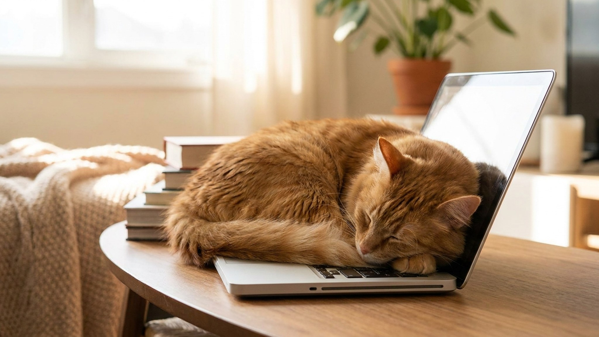

Стоит открыть ноутбук — и кошка уже здесь. Она укладывается прямо на клавиатуру, перекрывает экран и выглядит совершенно довольной жизнью. Это не случайность и не вредность. За этой привычкой стоит несколько вполне логичных причин, и каждую из них можно направить в нужное русло — без скандала с питомцем и без потери рабочего настроя.
🐾 Питомец ведёт себя странно?
AnimaLife расшифрует поведение кошки и собаки и подскажет, что делать. Попробуйте бесплатно прямо в мессенджере.
Ноутбук греется снизу и по бокам. Для кошки, у которой комфортная температура тела — 38-39 градусов, тёплая поверхность это источник блаженства. Особенно если в квартире прохладно, кондиционер работает или кошка уже немолодая.
Что важно понять: кошка не выбирает ноутбук, потому что там ваши данные. Она выбирает его, потому что он тёплый. Предложите ей другую тёплую поверхность — и конкуренция сразу станет честнее.
Что работает:
Ноутбук пахнет вами. Вы держите его в руках, кладёте на колени, касаетесь клавиш часами. Для кошки, которая маркирует «своих» запахом, это очень привлекательный объект. Лечь на него — значит оказаться максимально близко к вашему запаху в те моменты, когда вы почему-то смотрите не на неё, а в экран.
Это поведение особенно выражено у кошек с сильной привязанностью к хозяину. Если питомец активно ищет контакт именно во время вашей работы — это не капризы, а коммуникация.
Что работает:
Кошка видит: пока вы работали — вы смотрели на неё, играли, разговаривали. Теперь появился прямоугольный предмет, который полностью поглотил ваш взгляд и руки. С точки зрения кошки, ноутбук — конкурент за ваше внимание. И она действует по логике: если сяду туда — хозяин посмотрит на меня.
Это классическое поведение «привлечение внимания», и у него есть простое решение.
Что работает:
Кошки — наблюдатели режима. Если вы открываете ноутбук каждый день в одно время, кошка быстро усваивает: «вот этот звук — сигнал, что хозяин садится и перестаёт двигаться». Неподвижный хозяин — идеальная подушка.
Она не «занимает место специально». Она просто хорошо выучила ваше расписание и использует его в своих интересах.
Что работает:
🐾 Здоровье питомца под контролем
AI-ветеринар, дневник здоровья и персональные советы для вашего питомца — установите AnimaLife бесплатно.
Многие ноутбуки используются на диване, кровати, низком столике. Для кошки это «нейтральная высота» — не слишком высоко, видно всё вокруг, хозяин рядом. Идеальная обзорная точка. Если ваш рабочий стол невысокий — кошке просто удобно там находиться.
Что работает:
Главная ошибка — купить красивый лежак и поставить его в «удобное для вас место». Кошка выбирает место по своим критериям.
Переучивание занимает 3-7 дней. Каждый раз, когда кошка пытается лечь на ноутбук, спокойно перенесите её на лежак. Не ругайте, не шумите. Просто переместите и сразу дайте лакомство или пару секунд ласки. Повторяйте последовательно — и кошка перепишет привычку.
Многие хозяева ожидают результата за день-два и сдаются. На самом деле формирование новой привычки у кошки занимает 7-21 день при последовательной работе. Это нормально.
В первые 2-3 дня кошка будет пробовать снова и снова — она просто проверяет, не передумали ли вы. Это «тест на постоянство». Держитесь.
На 4-7 день попытки залезть на ноутбук начнут снижаться. Кошка чаще будет заходить на новый лежак, особенно если там тепло и пахнет вами.
После 14-21 дня лежак у рабочего места станет для кошки основным местом во время вашей работы — без специального подталкивания.
Ключевое условие: последовательность. Если вы один раз разрешили лечь на ноутбук «ну ладно, сегодня можно» — сбросьте счётчик на ноль. Кошка поняла: правило не абсолютное.
Лучший вариант — спроектировать рабочее место так, чтобы у кошки было удобное «место рядом», а не «место на».
Некоторые породы значительно более контактные и настойчивее ищут близость с хозяином.
Если ваша кошка — представитель высококонтактной породы, лучше сразу инвестировать в хорошее «рабочее место для кошки» рядом с вашим, а не бороться с инстинктом.
Если кошка резко усилилась в поиске контакта, стала тревожнее, не отходит ни на шаг — это может говорить об изменении её состояния или среды. Новый питомец в доме, переезд, смена режима, долгое отсутствие хозяина — всё это даёт нагрузку. Понаблюдайте за общим фоном поведения. Если изменения сохраняются больше двух недель — обсудите со своим ветеринаром, иногда тревожность требует профессиональной оценки.
Кошка, которая «прилипает» к ноутбуку не из тепла и не из привычки, а постоянно, беспокойно, с вокализацией — это другая история. Наблюдайте и описывайте поведение ветеринару точно: когда началось, как изменилось по сравнению с нормой, есть ли другие изменения в поведении или аппетите.
Материал носит информационный характер и не заменяет очную консультацию ветеринара.